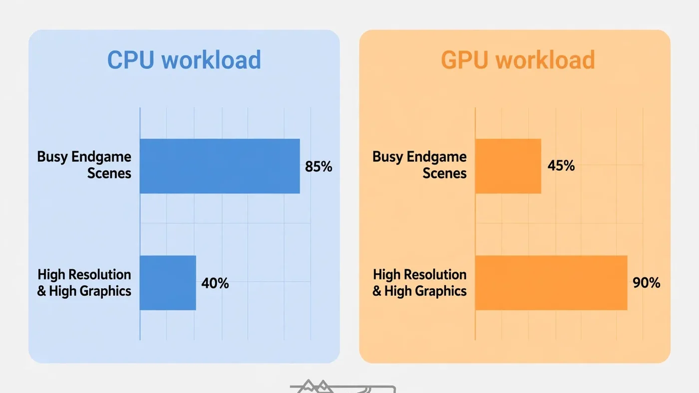

Fortnite Bottleneck: Is Your CPU or GPU Limiting FPS?
Fortnite has no single answer to the CPU-or-GPU question — and that is exactly why it confuses so many players. On one PC the processor caps the frame rate; on another, the graphics card does; and on the same PC the answer can flip between the start of a match and the endgame. This guide shows you how to find out which part limits your FPS, which settings move the load, and what to upgrade first.

The Short Answer: Fortnite Can Be Limited by Either Part
At 1080p on low or competitive settings chasing a high refresh rate, your CPU is the most likely limit: the graphics card finishes each frame quickly, so the frame rate waits on the processor. At 1440p or 4K on high or epic settings, your GPU is the most likely limit, since every frame carries far more rendering work.
Most players sit between those extremes, which is why generic advice ("Fortnite is a CPU game" or "just buy a better GPU") so often misses. The only reliable answer comes from measuring your own PC with the two-minute test below. Our guide to CPU vs GPU bottlenecks covers the same diagnosis in general terms.
Why Fortnite Leans on the CPU More Than Most Shooters
Fortnite is a battle royale for up to 100 players on one large island, and that scale is what makes it CPU-hungry. Every frame, the processor tracks player positions, building pieces and edits, physics, loot, effects and the shrinking storm — for dozens of players you cannot even see. Most arena shooters track a handful of players; Fortnite tracks a whole match.
Building is the second CPU cost: every wall, ramp and edit is geometry the processor must prepare, and a build fight can add hundreds of pieces in seconds. That is why frame rates hold up while looting quietly, then dip the moment a fight starts — the CPU workload jumps, though settings never changed.
Finally, Fortnite is online, so network problems can look like performance problems. If hitching appears only in live matches, check the connection before blaming hardware — our lag vs low FPS guide shows how to separate the two.
The Two-Minute Test: Read CPU and GPU Usage
Open an overlay showing per-core CPU usage and GPU usage — MSI Afterburner with RivaTuner is the usual free choice — then play a real match, not a lobby, and watch the numbers during a busy fight:
- GPU near full load and FPS below your target: the graphics card is the limit. Lowering resolution or graphics settings should raise FPS.
- GPU well below full load, and one CPU core near maximum: the processor is the limit. The graphics card is waiting for frames, so lowering graphics settings will barely help.
- Both parts below full load and FPS stuck at one number: look for an artificial cap — a frame-rate limit, VSync, or a refresh-rate limit — before suspecting hardware.
- Both parts below full load and FPS unstable: suspect memory, storage, heat or background software.
Watch per-core CPU usage, not the overall figure: games rarely spread work evenly, so 40% overall can still hide one core at 100% — and that core is your bottleneck. Our step-by-step bottleneck check walks through the test in detail.
What Your Symptoms Mean
| What you see | Most likely limit | What to try first |
|---|---|---|
| FPS drops only in endgame and build fights | CPU | Lower view distance and effects. |
| FPS is low everywhere, even in quiet areas | GPU (or a cap) | Lower resolution and preset; check caps. |
| GPU usage sits low while FPS stays low | CPU | Check per-core CPU; cut CPU-heavy settings. |
| FPS rises when you lower resolution | GPU | Keep settings lower, or upgrade the GPU. |
| FPS barely changes when you lower resolution | CPU | Lower CPU-heavy settings; a GPU upgrade will not help. |
| Sudden hitches when entering new areas | Storage or memory | Move the game to an SSD; check RAM. |
The resolution test in that table is the most useful diagnostic here: change only the resolution and compare FPS — a big change points to the GPU, almost none points to the CPU. See our resolution bottleneck guide for the same logic applied to any game.
Settings That Move the Load Between CPU and GPU
Not all settings cost the same part. Knowing which slider taxes which component lets you spend performance where it actually helps:
| Setting | Mainly loads | Notes |
|---|---|---|
| Resolution and 3D resolution | GPU | The biggest GPU lever; the fastest FPS gain when GPU-limited. |
| View distance | CPU and GPU | More visible objects means more CPU draw calls and GPU pixels. |
| Shadows | GPU, some CPU | Expensive at high settings; a first cut for competitive play. |
| Effects and post-processing | GPU | Storm effects and explosions; heavy in busy fights. |
| Textures | GPU memory | Costs VRAM more than speed; too high stutters on small-VRAM cards. |
| Anti-aliasing | GPU | Softens edges at a real frame cost; often run low or off. |
| Ray tracing | GPU, heavily | The most expensive single option. |
The practical rule: if CPU-limited, cut view distance and effects first; if GPU-limited, cut resolution, shadows and post-processing first. Cutting the wrong side costs visual quality for no FPS gain.
Rendering Modes: Performance Mode vs DirectX 12
Fortnite offers a Performance rendering mode alongside the fuller DirectX 12 mode, and the choice changes the bottleneck. Performance Mode strips back visual detail and cost, lowering graphics-card load and raising the frame-rate ceiling on weaker hardware — the mode most competitive players choose, trading looks for frames and consistency.
DirectX 12 mode keeps the full visuals, including richer lighting and optional ray tracing, and puts far more work on the graphics card. On a strong GPU it looks better; on a weak one it turns the GPU into the limit even at 1080p. Upscaling (NVIDIA DLSS, AMD FSR) can soften that cost by rendering at a lower internal resolution, but it cannot help a CPU-limited game — the graphics card was never the problem. Our DLSS, FSR and frame generation guide explains when upscaling helps.
Resolution and Refresh Rate Change the Answer
The same PC can be CPU-limited at one resolution and GPU-limited at another, because resolution only adds GPU work. At 1080p the graphics card finishes frames quickly, so a high-refresh target like 144Hz or 240Hz exposes the CPU, which must prepare every one of those frames in a 100-player match.
At 1440p the balance shifts, and at 4K the GPU almost always takes over — four times the pixels of 1080p means far more rendering work, while the CPU's per-frame work barely changes. A frame cap can also disguise the answer by giving both parts breathing room. If smoothness matters more than peak FPS, a cap slightly below your refresh rate is often the better trade — see our frame time guide for why steady delivery beats a higher average.
Why FPS Drops in Endgame
Endgame is Fortnite's worst case for the CPU: the remaining players pack into a small zone, everyone builds, and effects are everywhere. The processor's workload peaks exactly when the fight matters most, so a PC that holds its target all match can still dip in the final circles. That is normal for a CPU limit, not a sign something is broken.
Tune settings so the endgame — not the quiet start — hits your target, since endgame FPS is the number that matters. Also watch frame time, not just the FPS average: a steady lower frame rate feels better than a higher average interrupted by spikes. The stuttering and 1% lows guide linked below explains how to read those dips.
The Other Suspects: RAM, Storage, Heat and Background Apps
Not every Fortnite problem is a CPU or GPU bottleneck. Too little RAM, or a single stick instead of a matched pair, can stutter exactly like a CPU problem until you check RAM usage. A game on a slow hard drive can hitch when new areas stream in, where the same game on an SSD stays smooth. And a hot CPU or GPU drops its clock speed to cool down, so FPS that starts fine and fades over a session points to heat.
Check background software before any purchase: launchers, browsers, recording tools and overlays compete for the same CPU cores Fortnite needs. Close them and re-test one change at a time. And if FPS is fine in creative maps but hitches only in live matches, revisit the network angle — a connection problem cannot be fixed with a new graphics card.
What to Upgrade First
| Your diagnosis | Upgrade first | Why |
|---|---|---|
| GPU near full load, FPS rises when settings drop | Graphics card | A faster card raises the ceiling directly. |
| One CPU core maxed, GPU idle, FPS flat when settings drop | Processor | Only a faster CPU raises the ceiling. |
| Stuttering with RAM nearly full | RAM capacity / dual channel | Cheaper, and it removes a limit neither can fix. |
| Hitches when moving fast through the map | SSD | Streaming stalls are a storage problem. |
| FPS fades over a long session | Cooling | Airflow or a cooler restores throttled clocks. |
One warning: a CPU upgrade on an old platform can mean a new motherboard and RAM too, so price the whole platform, not just the chip. And a faster graphics card only helps if the GPU was the limit — on a CPU-limited setup, FPS stays where it was. Our guide to fixing 100% CPU usage and guide to fixing low GPU usage cover the software fixes to try before either purchase.
Step by Step: Test Your Own PC
- Set a baseline. Play two full matches and note FPS in quiet areas and in endgame fights.
- Turn on the overlay. Show per-core CPU usage, GPU usage, temperatures and frame time in a real match.
- Run the resolution test. Drop resolution one step, change nothing else, and compare FPS.
- Cut the right settings. CPU-limited: view distance and effects. GPU-limited: resolution, shadows and post-processing. Re-test after each change.
- Check the other suspects. Close background apps, check RAM usage and temperatures, and confirm the game is on an SSD.
- Decide on evidence. Only upgrade the part your test identified, and sanity-check the pairing first.
Free PC Bottleneck Calculator — Estimate CPU and GPU balance for your resolution and workload: check whether your CPU or GPU is the slow half of the frame on the PC Bottleneck Calculator (see its methodology page) before you buy an upgrade for Fortnite.
Conclusion
Fortnite's bottleneck moves: the CPU usually sets the ceiling at competitive settings and in endgame fights, while the GPU takes over at high resolution and high settings. Measure your own PC with the usage and resolution tests, cut the settings that load the part you identified, and upgrade only that part. To check whether your hardware is the limit, try the free PC Bottleneck Calculator.
Frequently Asked Questions
Is Fortnite CPU or GPU intensive?
Both, but it leans on the CPU more than most shooters. At competitive settings — low graphics, high frame-rate targets — the processor usually sets the ceiling, because it must track many players, builds and effects every frame. At high resolution with high graphics settings, the graphics card takes over as the limit.
Why is my GPU usage low in Fortnite?
Low GPU usage usually means something else is the limit: the CPU cannot prepare frames fast enough, a frame cap or VSync is holding FPS back, or the game is waiting on another resource. Check per-core CPU usage alongside GPU usage — if one CPU core is maxed out while the GPU sits idle, you have a CPU limit.
Does raising the resolution help a CPU bottleneck?
It shifts load onto the GPU, so GPU usage rises, but it does not raise your FPS — it usually lowers it. Raising resolution is a diagnostic trick, not a fix: if FPS barely changes when you raise resolution and settings, the CPU was the limit; if FPS falls sharply, the GPU was already near its limit.
Is Performance Mode better for FPS in Fortnite?
Usually, yes, especially on weaker hardware or when chasing high frame rates. Performance Mode cuts visual detail and rendering cost, which lowers the load on the graphics card and gives the CPU an easier frame to prepare. The trade-off is visibly simpler graphics, so it suits competitive play more than visual showcase play.
What CPU and GPU balance is best for Fortnite at 144Hz?
A processor with strong single-core performance matters most, paired with a mid-range graphics card that can hold your resolution and settings without saturating. The exact pairing depends on your resolution and graphics preset, so check your combination on a bottleneck calculator before buying, and test with the usage method in this guide.
Sources
Official documentation referenced in this guide: